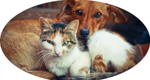
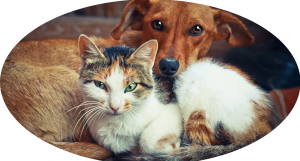

Adote um amigo
Abra o coração e estenda seus braços, adote um amor!
Por que adotar:
Você salva a vida de um animal e ele ganha um lar novo
Garante um companheiro em todos os momentos
Diminui o número de animais abandonados
 

Decidiu adotar?
Sabemos que a decisão de adotar um bichinho é um passo importante. Afinal, seu novo amigo é para vida toda e exigirá muita atenção, carinho e tempo. Nós prezamos pela adoção responsável e, para ajudar os novos tutores, fornecemos orientações e suporte antes e, por no mínimo, seis meses após a adoção.